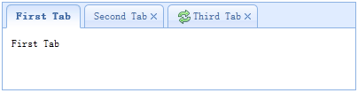

Override defaults with $.fn.tabs.defaults.
The tabs display a collection of panel. It shows only one tab panel at a time. Each tab panel has the header title and some mini button tools, including close button and other customized buttons.
1. Create tabs via markup
Create tabs from markup is even easier, we don't need to write any JavaScript code. Remember to add 'easyui-panel' class to <div/> markup. Each tab panel is created via sub <div/> markup, the usage is same as panel.
2. Create tabs programatically
Now we create tabs programatically, we catch the 'onSelect' event also.
Add a new tab panel with mini tools, the mini tools icon(8x8) is placed before the close button.
| Name | Type | Description | Default |
|---|---|---|---|
| width | number | The width of tabs container. | auto |
| height | number | The height of tabs container. | auto |
| plain | boolean | True to render the tab strip without a background container image. | false |
| fit | boolean | True to set the size of tabs container to fit it's parent container. | false |
| border | boolean | True to show tabs container border. | true |
| scrollIncrement | number | The number of pixels to scroll each time a tab scroll button is pressed. | 100 |
| scrollDuration | number | The number of milliseconds that each scroll animation should last. | 400 |
| tools | array,selector |
The right toolbar. Possible values: 1. An array indicate the tools, each tool options is same as linkbutton. 2. A selector point to the <div/> that contains the tools. Code example: Define tools with an array. $('#tt').tabs({
tools:[{
iconCls:'icon-add',
handler:function(){
alert('add')
}
},{
iconCls:'icon-save',
handler:function(){
alert('save')
}
}]
});
Define tools with a exist DOM container. $('#tt').tabs({
tools:'#tab-tools'
});
<div id="tab-tools">
<a href="#" class="easyui-linkbutton" plain="true" iconCls="icon-add"></a>
<a href="#" class="easyui-linkbutton" plain="true" iconCls="icon-save"></a>
</div>
|
null |
| Name | Parameters | Description |
|---|---|---|
| onLoad | panel | Fires when an ajax tab panel finish loading remote data. |
| onSelect | title,index | Fires when user select a tab panel. |
| onBeforeClose | title,index |
Fires before the tab panel is closed, return false to cancel this close action.
The example below shows how to show confirm dialog before closing tab panel.
$('#tt').tabs({
onBeforeClose: function(title){
return confirm('Are you sure you want to close ' + title);
}
});
// using the async confirm dialog
$('#tt').tabs({
onBeforeClose: function(title,index){
var target = this;
$.messager.confirm('Confirm','Are you sure you want to close '+title,function(r){
if (r){
var opts = $(target).tabs('options');
var bc = opts.onBeforeClose;
opts.onBeforeClose = function(){}; // allowed to close now
$(target).tabs('close',index);
opts.onBeforeClose = bc; // restore the event function
}
});
return false; // prevent from closing
}
});
|
| onClose | title,index | Fires when user close a tab panel. |
| onAdd | title,index | Fires when a new tab panel is added. |
| onUpdate | title,index | Fires when a tab panel is updated. |
| onContextMenu | e, title,index | Fires when a tab panel is right clicked. |
| Name | Parameter | Description |
|---|---|---|
| options | none | Return the tabs options. |
| tabs | none | Return all tab panels. |
| resize | none | Resize the tabs container and do layout. |
| add | options |
Add a new tab panel, the options parameter is a config object, see tab panel properties for more details.
When adding a new tab panel, it will become selected. To add a unselected tab panel, remember to set 'selected' property to false. // add a unselected tab panel
$('#tt').tabs('add',{
title: 'new tab',
selected: false
//...
});
|
| close | which | Close a tab panel, the 'which' parameter can be the title or index of tab panel to be closed. |
| getTab | which | Get the specified tab panel, the 'which' parameter can be the title or index of tab panel. |
| getTabIndex | tab | Get the specified tab panel index |
| getSelected | none |
Get the selected tab panel. The example below shows how to get the index of selected tab panel.
var tab = $('#tt').tabs('getSelected');
var index = $('#tt').tabs('getTabIndex',tab);
alert(index);
|
| select | which | Select a tab panel, the 'which' parameter can be the title or index of tab panel. |
| exists | which | Indicate if the special panel is exists, the 'which' parameter can be the title or index of tab panel. |
| update | param |
Update the specified tab panel, the param parameter contains two properties: tab: the tab panel to be updated. options: the panel options. Code example: // update the selected panel with new title and content
var tab = $('#tt').tabs('getSelected'); // get selected panel
$('#tt').tabs('update', {
tab: tab,
options: {
title: 'New Title',
href: 'get_content.php' // the new content URL
}
});
// call 'refresh' method for tab panel to update its content
var tab = $('#tt').tabs('getSelected'); // get selected panel
tab.panel('refresh', 'get_content.php');
|
| enableTab | which |
Enable the specified tab panel, the 'which' parameter can be the title or index of tab panel.
This method is available since version 1.3.
Code example: $('#tt').tabs('enableTab', 1); // enable the second tab panel
$('#tt').tabs('enableTab', 'Tab2'); enable the tab panel that has 'Tab2' title
|
| disableTab | which |
Disable the specified tab panel, the 'which' parameter can be the title or index of tab panel.
This method is available since version 1.3.
Code example: $('#tt').tabs('disableTab', 1); // disable the second tab panel.
|
The tab panel properties is defined in panel component, below is some common properties.
| Name | Type | Description | Default |
|---|---|---|---|
| id | string | The id attribute of tab panel. | null |
| title | string | The tab panel title text. | |
| content | string | The tab panel content. | |
| href | string | A URL to load remote content to fill the tab panel. | null |
| cache | boolean | True to cache the tab panel, valid when href property is setted. | true |
| iconCls | string | An icon CSS class to show on tab panel title. | null |
| width | number | The width of tab panel. | auto |
| height | number | The height of tab panel. | auto |
Some added properties.
| Name | Type | Description | Default |
|---|---|---|---|
| closable | boolean | When set to true, the tab panel will show a closable button which can click to close the tab panel. | false |
| selected | boolean | When set to true, tab tab panel will be selected. | false |